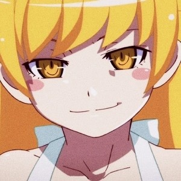

Some random information
Anya Forger from the anime "Spy x Family". She is a very funny girl. Her favorite food is peanuts.

Oshino Shinobu from the anime "Bakemonogatari". She is actually a vampire. She likes donuts.
Kanna Kamui from the anime "Kobayashi's dragon maid". She is really cute. She likes to eat everything around her.
Miyauchi Renge from the anime "Non Non Biyori". Don't let her appearance fool you. She is amazingly mature for her age.